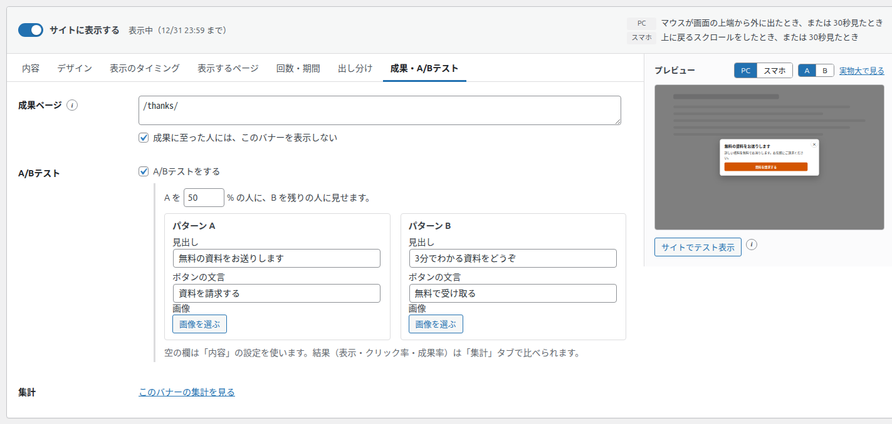
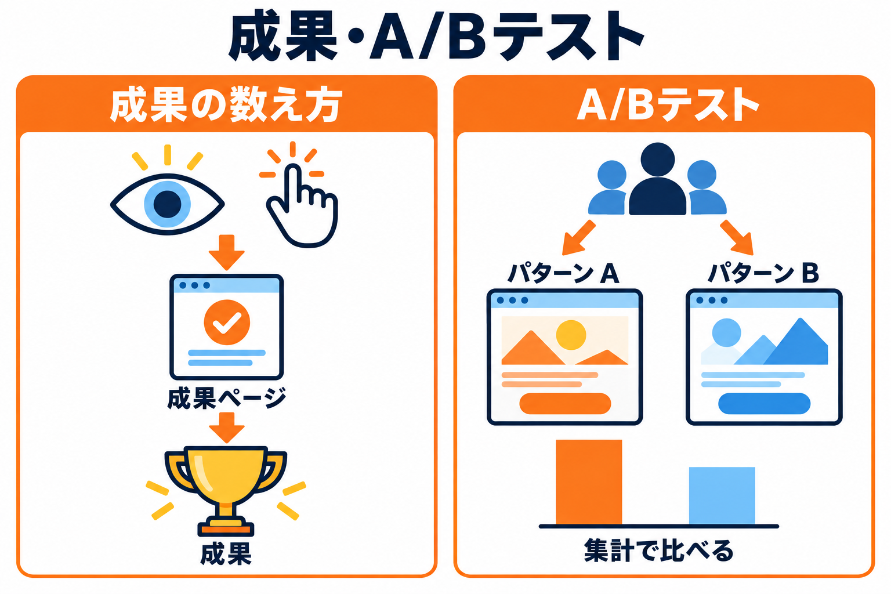

成果・A/Bテストタブ
バナーの「成果」を数えるページの指定と、2つのパターンを比べる A/B テストの設定を行うタブです。


項目の一覧
| 項目 | 種類 | 初期値 |
|---|---|---|
| 成果ページ | 複数行（1行に1つ） | 空 |
| 成果に至った人には、このバナーを表示しない | チェックボックス | オフ |
| A/Bテストをする | チェックボックス | オフ |
| A を ○ % の人に、B を残りの人に見せます | 数字（%、5 きざみ） | 50 % |
| パターン A / パターン B：見出し・ボタンの文言・画像 | 1行の文字・画像 | 空（「内容」の設定を使う） |
| 集計：このバナーの集計を見る | リンク | 保存したあとに表示 |
成果ページ
何をするものか: 購入完了・問い合わせ完了など、バナーの目的を果たしたときに開くページを指定します。このバナーを見た（またはクリックした）人が、あとでこのページに来たら「成果」として1回数えます。
- 書き方は「表示するページ」の URL・パスと同じです（1行に1つ、
/thanks/など）。 - 成果は、同じブラウザの人についてバナーごとに1回だけ数えます。
- 数えるのは、設定タブで計測がオンのとき（記録してよい訪問者のとき）だけです。
- 成果ページを「表示しないページ」に入れていても数えます。
- 成果を数えるのは、バナーが公開中で「サイトに表示する」がオンのときです。停止中のバナーの成果は数えません。
成果に至った人には、このバナーを表示しない
チェックを入れると、成果ページに来た人には、その後このバナーを表示しません。すでに申し込んだ人に、同じ案内を出し続けないための設定です。この設定は、計測をオフにしていても働きます（訪問者のブラウザに記録します）。
A/Bテスト
何をするものか: 見出し・ボタンの文言・画像が違う2つのパターン（A と B）を、決めた割合で訪問者に出し分け、どちらがよくクリックされるか・成果につながるかを比べます。
「A/Bテストをする」にチェックを入れます。下に設定の欄が開きます。
「A を ○ % の人に」の数字を決めます。B は残りの人に見せます（初期値はどちらも 50 %）。
パターン A とパターン B の見出し・ボタンの文言・画像を入れます。欄の下に「空の欄は「内容」の設定を使います。結果（表示・クリック率・成果率）は「集計」タブで比べられます。」と表示されているとおり、空の欄は「内容」タブの設定を使います。
プレビューの「A / B」で、それぞれの見た目を確かめてから保存します。
しばらく表示したあと、集計タブの「A/Bテスト」で、パターンごとの表示・クリック率・成果率を比べます。
- 1人の訪問者には、最初に割り当てたパターンをずっと表示します（同じブラウザの場合）。
- パターンの画像を入れた場合は、PC でもスマホでもその画像を使います（スマホ用の画像より優先します）。
- 説明文・ボタンのリンク先・デザインは、A と B で共通です。
おすすめ: 一度に変えるのは1か所（見出しだけ、など）にすると、どの違いが結果に効いたのかが分かりやすくなります。表示の回数が少ないうちは差が偶然のこともあるので、ある程度の回数が集まってから比べてください。
集計
保存したあとに「このバナーの集計を見る」のリンクが表示されます。押すと集計タブが開き、このバナーの行が色付きで強調されます。